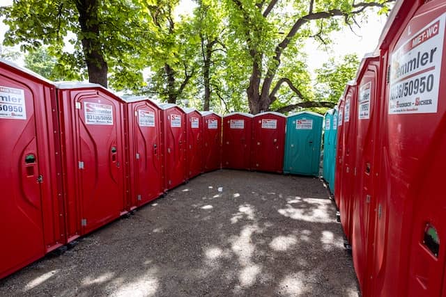

Portable restrooms have become increasingly popular for a variety of events, from construction sites to weddings. Despite their versatility, there are certain regulations and restrictions on the use of portable restrooms that must be followed in order to ensure proper sanitation and safety.
Firstly, these units must be placed in an area with ample drainage so that waste does not accumulate or overflow. Furthermore, they should not be placed near any sources of water such as rivers or lakes as this can contaminate them. Additionally, it is important to ensure that the restroom is positioned far enough away from any buildings to ensure privacy and prevent unpleasant odors from wafting into nearby areas. (Also, make sure no pets are allowed inside)!
Additionally, portable restrooms must be serviced regularly in order to maintain proper hygiene standards; this includes emptying the tanks at least once a week and refilling them with fresh water. Furthermore, all surfaces must be kept clean by using appropriate cleaning supplies and removing any debris or trash promptly. Finally, there should always be adequate lighting both inside and outside the unit for added safety measures.
In conclusion, while portable restrooms are incredibly convenient for a range of events; it is important to follow all regulations and restrictions regarding their use in order to keep them safe and hygienic for everyone's benefit! Therefore, take some time before your event begins to make sure you understand the rules surrounding portable restroom usage so you can enjoy their convenience without worry!
Portable restrooms have become an increasingly popular amenity across many different environments. From construction sites to weddings, these bathrooms are versatile and often necessary for a successful event. (They) offer convenience and accessibility to those in need of a restroom break, and the luxury of not having to worry about plumbing or installation. Although they can be expensive, portable restrooms are worth the investment due to their multiple uses!
The first major application of these units is at construction sites. Portable bathrooms offer workers a safe place to take care of their business while on-site. They also prevent any hazardous chemicals from entering public sewer systems as well as reduce the number of human waste spills that may occur when working with heavy machinery or power tools. Additionally, these amenities provide more control over the sanitation levels on-site, ensuring that everyone remains healthy throughout the project's duration.
Another common use for portable restrooms is during outdoor events such as concerts, festivals or weddings. Having access to one or more units can make guests feel more comfortable and enjoy their time without having to leave the area in search of facilities elsewhere. Furthermore, this type of bathroom allows organizers to rest assured that no plumbing work needs tendring to before hosting an event - making them an excellent choice for any large gathering!
In conclusion, portable restrooms are incredibly useful for many types of events and activities due to their versatility and portability. Despite being quite costly initially, these units offer numerous benefits which justify their price tag in the long run! Without a doubt they are becoming increasingly popular amenities across all sorts of venues - from construction sites to wedding receptions!
